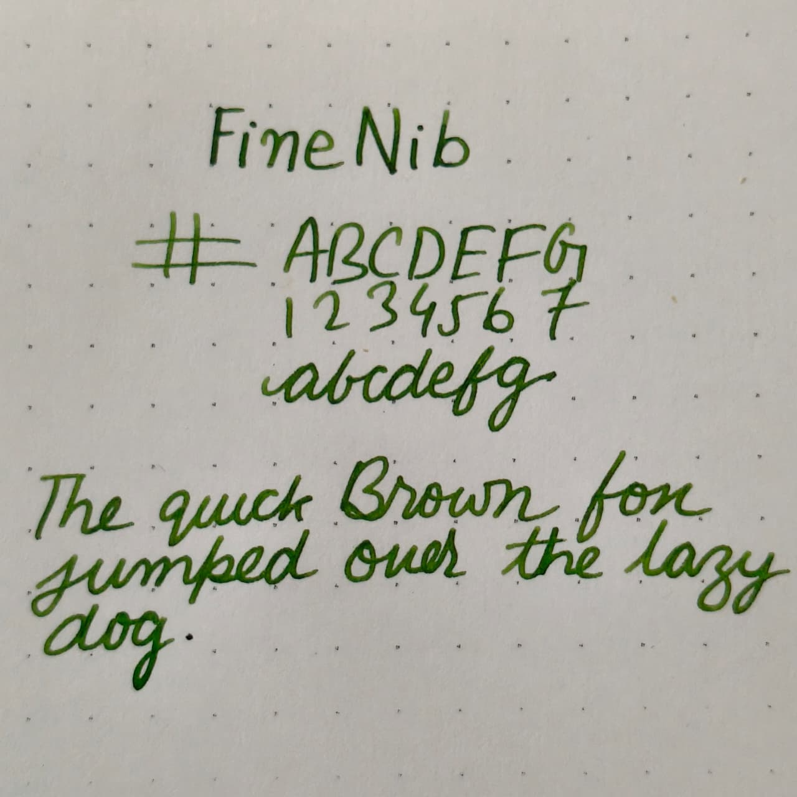
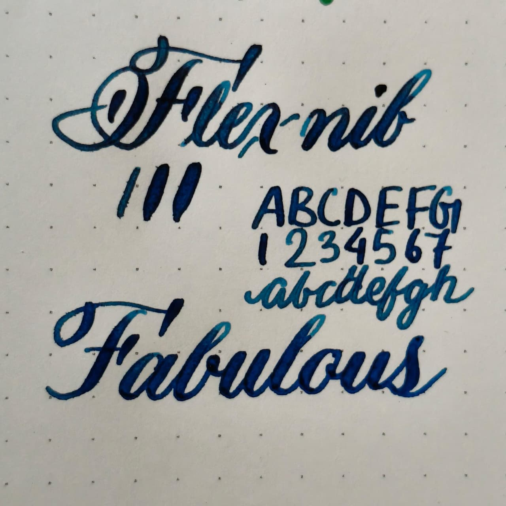
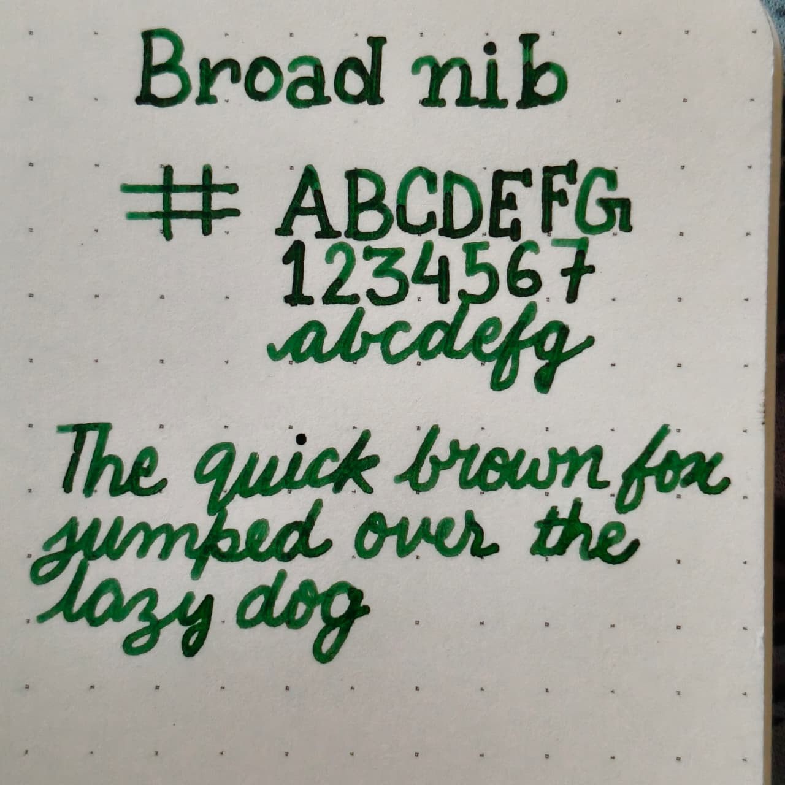
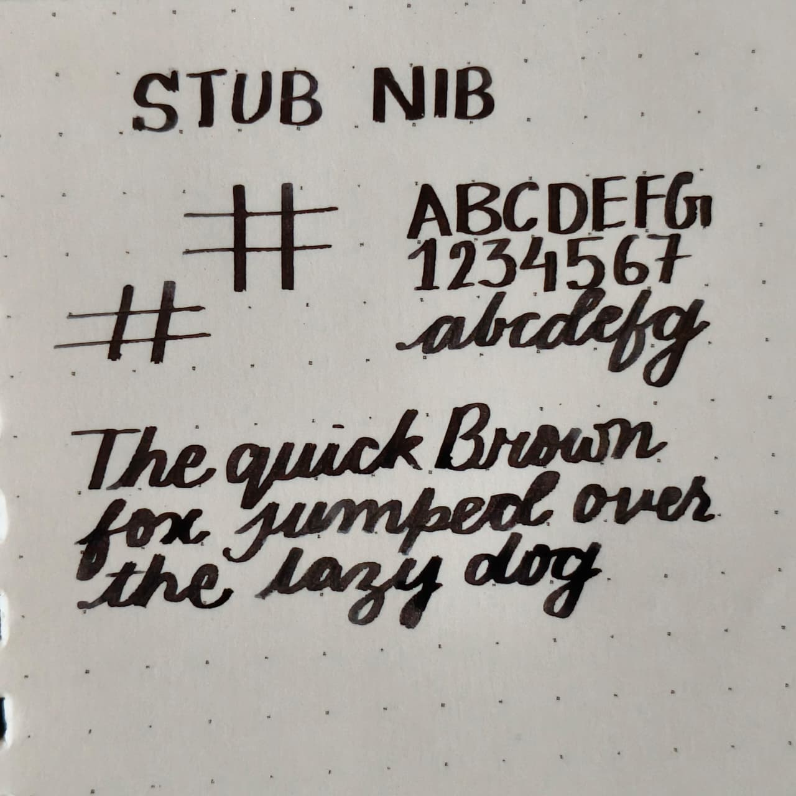
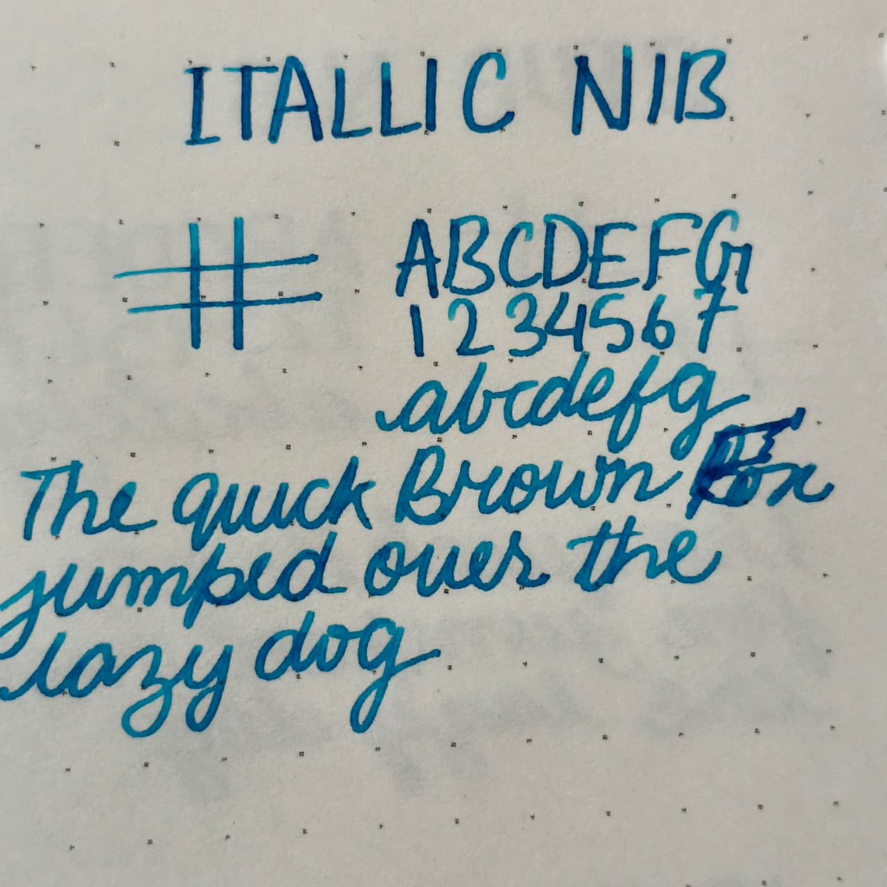
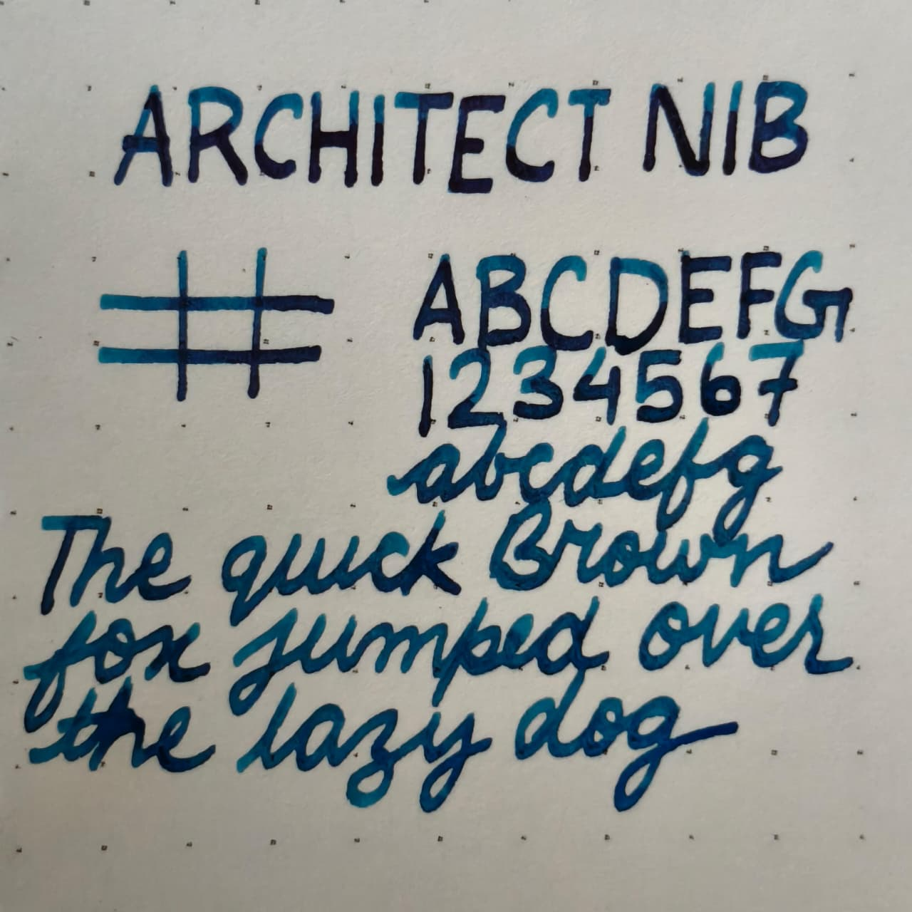
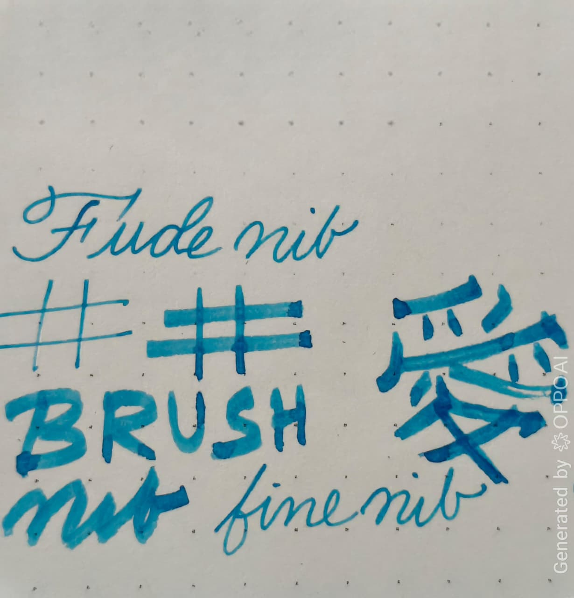
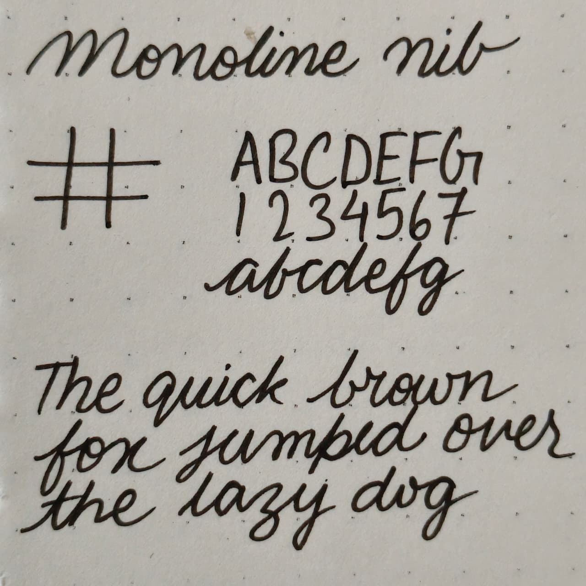
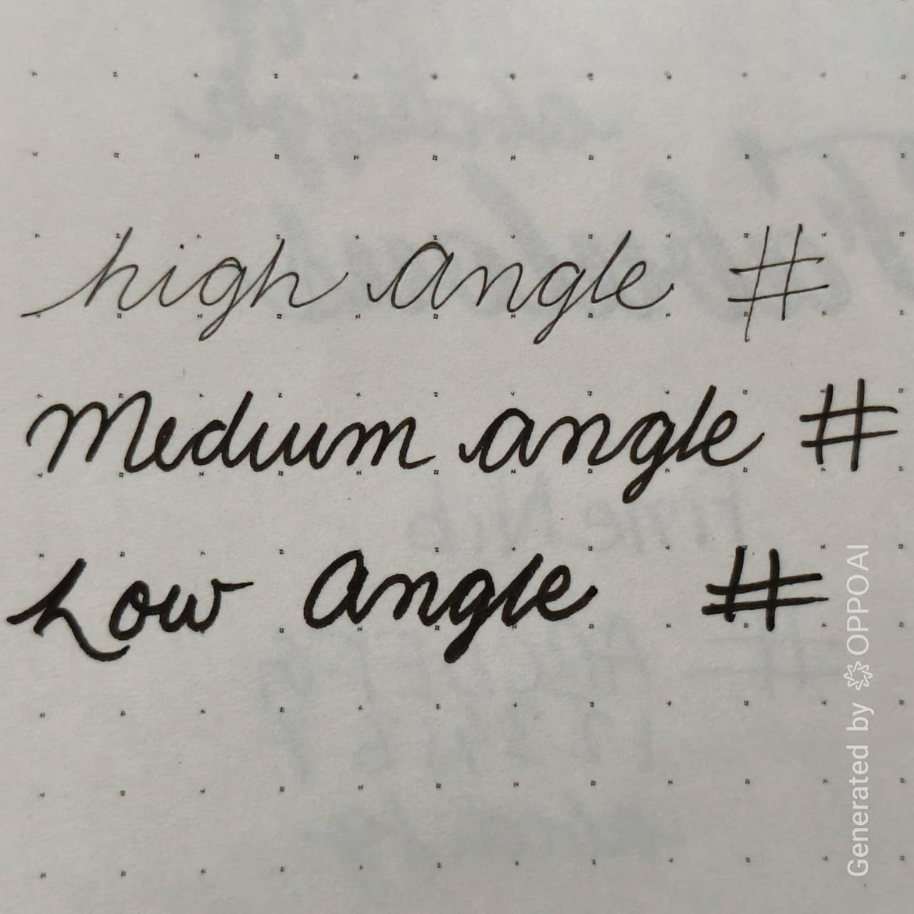

Explore writing personalities, tactile feedback, expressive geometries, and grind characteristics crafted for collectors, artists, and daily writers.

Crisp controlled writing with reduced ink spread and excellent detail retention for daily use.

Fine upstrokes and broad downstrokes with smooth ink flow for elegant handwriting and artistic expression.

Wet luxurious strokes with rich saturation and exceptionally smooth gliding character.

Smooth expressive line variation ideal for elegant handwriting, signatures, and journaling.

Sharp transitions and crisp edges designed for dramatic writing character and formal scripts.

Broad cross strokes and thinner verticals optimized for print handwriting styles.

Dynamic brush-like writing profile with dramatic angle-sensitive line variation.

Consistent technical stroke width for drafting, diagramming, and precision writing.

Smooth angle-sensitive transitions with fluid expressive writing feel and collector-grade character.